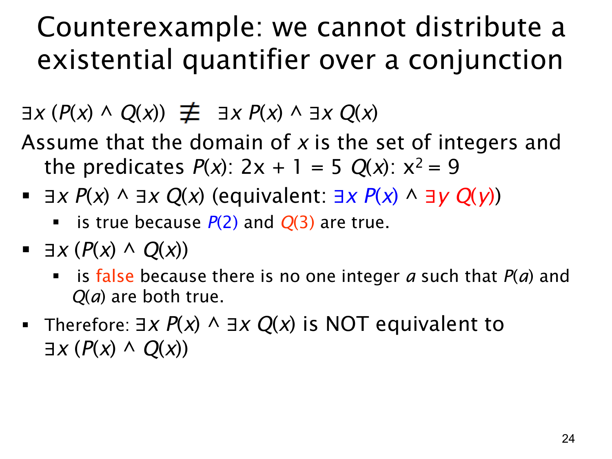

L1.2 · 第 24 页讲解原文
查看这一页课件

反例：存在量词不能跨“且”随意拆分
本页展示
∃x(P(x)∧Q(x))≡(∃xP(x))∧(∃xQ(x)).
左式要求同一个对象同时满足 P 与 Q；右式只要求分别找到满足 P 和满足 Q 的对象，两个见证可以不同。为让差别具体可见，课件把论域设为整数，并定义
P(x):2x+1=5,qquadQ(x):x2=9.
P(x) 的解是 x=2，所以 ∃xP(x) 真。Q(x) 的解是 x=3 或 x=−3，所以 ∃xQ(x) 也真。因此右式是真：可以由 2 证明前半句，由 3 证明后半句。
但不存在满足两个条件的同一个整数。唯一满足 P 的 2 有 22=4=9；满足 Q 的 3,−3 也不满足 2x+1=5。所以 ∃x(P(x)∧Q(x)) 为假。左右在同一论域下得到不同真值，足以否定逻辑等价。
页上还把右式重写为 (∃xP(x))∧(∃yQ(y))。因为两个量词作用域互不相交，给第二个见证换个变量名更清楚地展示“可以是不同对象”；而左式只有一个被量化的 x，两项必须由它共同满足。